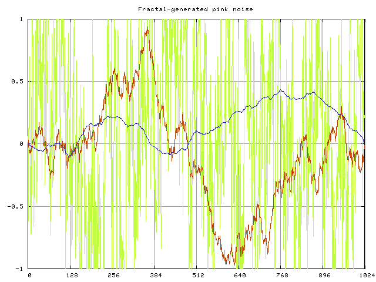

|
TAP-plugins Tom's Audio Processing plugins for audio engineering on the Linux platform |
|
[ TAP AutoPanner ] [ TAP Chorus/Flanger ] [ TAP DeEsser ] [ TAP Dynamics (Mono & Stereo) ] [ TAP Equalizer and TAP Equalizer/BW ] [ TAP Fractal Doubler ] [ TAP Pink/Fractal Noise ] [ TAP Pitch Shifter ] [ TAP Reflector ] [ TAP Reverberator ] [ TAP Rotary Speaker ] [ TAP Scaling Limiter ] [ TAP Sigmoid Booster ] [ TAP Stereo Echo ] [ TAP Tremolo ] [ TAP TubeWarmth ] [ TAP Vibrato ]
This plugin came to life as a secondary product of the development of TAP Fractal Doubler. It adds pink noise to the incoming signal using a one-dimensional random fractal line generated by the Midpoint Displacement Method, which is a computationally cheap method suitable for generating random fractals.
| Unique ID | 2155 |
|---|---|
| I/O ports | 1 input / 1 output |
| CPU usage (44.1 kHz) | 1.5% |
| CPU usage (96 kHz) | 3.3% |
| Hard RT Capable | Yes |
| In-place operation | Supported |
| run_adding() function | Provided |
The fractal line has one parameter: Fractal Dimension, which may be between 0 and 1. This parameter determines the spectral density of the generated noise. The graph below demonstrates 1024 samples of generated fractal noise using three different settings of the Fractal Dimension. The green graph was made with a setting of 0 (so it is white noise, actually), the red curve is of Fractal Dimension 0.5 and the blue one's dimension is 1.
In addition to setting the Fractal Dimension of the generated pink noise, you can mix it to the incoming signal in different amounts. This way you can emulate different signal/noise ratios, and therefore test how your tracks degrade due to additive noise. A really geeky entertainment for hardcore mixing engineers.
| name | min. value | default value | max. value |
|---|---|---|---|
| Fractal Dimension | 0 | 0.5 | 1 |
| Signal Level [dB] | -90 | 0 | 20 |
| Noise Level [dB] | -90 | -90 | 20 |
It is always worth putting this plugin on your tracks... because when you turn it off, they suddenly get so much better! :-)